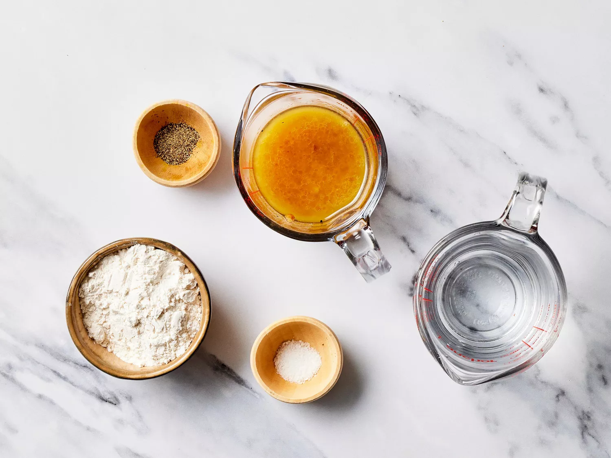
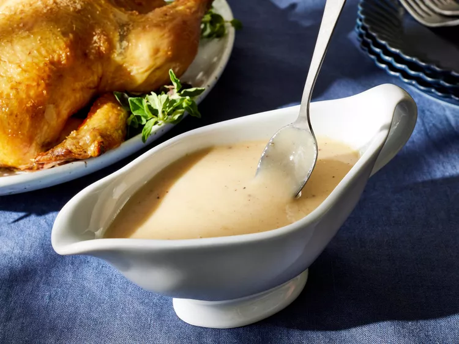

The Starving Artist Cookbook
Simple Chicken Gravy


Ingredients
- 4 tablespoons all-purpose flour
- 1 cup water or chicken stock
- ½ cup drippings from a roast chicken
- salt and ground black pepper to taste
Drections
- Gather the ingredients.
-
Stir flour mixture and remaining water (or stock) into a
roasting pan with drippings from roast chicken; whisk
to combine and turn heat to medium. Cook, stirring
constantly, until gravy is thickened and bubbly,
adding more water (or stock) if needed. Season
with salt and pepper.
-
Place flour in a medium bowl. Pour 2 to 3 tablespoons of
water into the flour and whisk until combined and thick
,
but not pasty
.